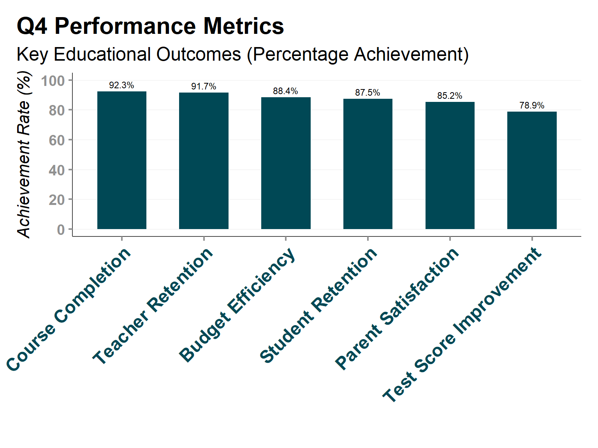

library(ggplot2)
library(cpaltemplates)
# Basic CPAL theme
ggplot(mtcars, aes(x = wt, y = mpg)) +
geom_point() +
theme_cpal() +
labs(title = "Vehicle Weight vs Fuel Efficiency")Themes & Styling
CPAL’s comprehensive theme system for consistent, professional visualizations
Why Themes Matter for Data Visualization
A theme controls every visual aspect of your plot that isn’t directly related to your data: fonts, colors, spacing, grid lines, backgrounds, and more. Without consistent theming, even great data analysis can look unprofessional or be hard to interpret.
The cpaltemplates theme system solves critical problems:
Problems with Default ggplot2 Themes
| Issue | Impact | CPAL Solution |
|---|---|---|
| Inconsistent branding | Visualizations don’t look like CPAL materials | Automatic CPAL brand integration |
| Poor font choices | System fonts vary by computer, look unprofessional | Google Fonts (Inter/Roboto) with fallbacks |
| Overwhelming visual clutter | Grid lines and decorations compete with data | Optimized visual hierarchy |
| Not output-optimized | Same theme for web, print, presentations | Specialized themes for each medium |
| Accessibility issues | Poor contrast, small fonts | Built-in accessibility standards |
What CPAL Themes Provide
- Professional appearance: Every plot looks publication-ready
- Brand consistency: Automatic CPAL colors, fonts, and styling standards
- Output optimization: Different themes for web, print, presentations, and maps
- Accessibility built-in: High contrast, readable fonts, colorblind-safe defaults
- Customizable: Easy to adjust while maintaining brand consistency
CPAL Theme System Overview
The cpaltemplates package provides 8 comprehensive theme functions designed for different use cases and output formats:
| Theme Function | Purpose | Best For | Key Features |
|---|---|---|---|
theme_cpal() |
Default theme for most uses | Reports, presentations, general analysis | Balanced design, flexible parameters |
theme_cpal_minimal() |
Clean, distraction-free | Focus-on-data visualizations | Reduced visual elements |
theme_cpal_dark() |
Dark mode presentations | Dark backgrounds, night viewing | Light text, optimal dark contrast |
theme_cpal_classic() |
Traditional academic style | Formal reports, academic papers | Structured appearance, axis lines |
theme_cpal_print() |
Print optimization | PDFs, printed materials | High contrast, print-safe styling |
theme_cpal_map() |
Geographic visualizations | Maps, spatial data | Minimal competing elements |
set_theme_cpal() |
Set default theme | Session-wide consistency | Automatic theme application |
get_shiny_theme_colors() |
Shiny application styling | Interactive dashboards | CSS color integration |
The Science Behind CPAL Themes
Typography: All themes use Google Fonts (Inter for headings, Roboto for body text) with carefully chosen fallbacks for cross-platform consistency.
Color hierarchy: Themes work seamlessly with CPAL’s color system, ensuring proper contrast and accessibility.
Visual hierarchy: Strategic use of whitespace, font sizes, and element prominence guides the reader’s attention to your data.
Technical optimization: Each theme is tested across different output formats and screen sizes.
Core Theme Function: theme_cpal()
The theme_cpal() function is your starting point for most visualizations. It’s highly customizable while maintaining CPAL brand standards.
Basic Usage
Understanding theme_cpal() Parameters
Why so many options? Different visualizations need different emphasis and styling. Rather than creating dozens of separate functions, theme_cpal() provides focused control over the most important design decisions.
theme_cpal(
base_size = 14, # Controls overall text scaling
base_family = "", # Font family (auto-detects Google Fonts)
style = "default", # Overall theme style
grid = "horizontal", # Grid line configuration
axis_line = "x", # Axis line placement
axis_title = TRUE, # Include axis titles
legend_position = "bottom" # Legend placement
)Parameter Deep Dive
base_size - Text Scaling
Controls the size of all text elements proportionally:
# For presentations (larger text)
theme_cpal(base_size = 18)
# For dense dashboards (smaller text)
theme_cpal(base_size = 12)
# Default for reports
theme_cpal(base_size = 14)When to adjust: - Presentations: 16-20 for readability from distance - Reports: 14-16 for balanced readability and space efficiency - Dashboards: 10-14 for information density - Print materials: 12-16 depending on page size
style - Overall Visual Approach
# Clean, balanced (most common)
theme_cpal(style = "default")
# Reduced visual elements
theme_cpal(style = "minimal")
# Traditional academic appearance
theme_cpal(style = "classic")
# Optimized for dark backgrounds
theme_cpal(style = "dark")Choosing the right style: - “default”: Start here for 90% of visualizations - “minimal”: When data complexity is high and you need focus - “classic”: For formal academic or traditional business contexts - “dark”: For presentations on dark backgrounds or night viewing
grid - Grid Line Strategy
Grid lines help readers estimate values but can create visual clutter:
# Horizontal only (best for most bar/line charts)
theme_cpal(grid = "horizontal")
# Vertical only (good for time series)
theme_cpal(grid = "vertical")
# Both directions (for scatter plots, heatmaps)
theme_cpal(grid = "both")
# No grid lines (minimal, clean)
theme_cpal(grid = "none")Decision guide: - Bar charts: Horizontal grid helps estimate heights - Line charts: Horizontal for values, vertical for time references - Scatter plots: Both can help with coordinate reading - Maps/artistic: None to avoid distracting from shapes
axis_line - Axis Emphasis
# X-axis line only (emphasizes categories/time)
theme_cpal(axis_line = "x")
# Y-axis line only (emphasizes value scale)
theme_cpal(axis_line = "y")
# Both axes (traditional)
theme_cpal(axis_line = "both")
# No axis lines (minimal)
theme_cpal(axis_line = "none")legend_position - Legend Placement Strategy
# Bottom (default, doesn't interfere with data)
theme_cpal(legend_position = "bottom")
# Right side (traditional, saves vertical space)
theme_cpal(legend_position = "right")
# Top (good for maps, minimal legends)
theme_cpal(legend_position = "top")
# Remove legend entirely
theme_cpal(legend_position = "none")Specialized Theme Variants
theme_cpal_minimal() - Focus on the Data
When to use: Complex visualizations where every element should direct attention to the data itself.
# Perfect for dense data visualizations
library(ggplot2)
library(cpaltemplates)
# Create realistic complex dataset with multiple categories and dense points
set.seed(789) # For reproducible example
n_points <- 500
complex_data <- data.frame(
variable1 = rnorm(n_points, mean = 50, sd = 15),
variable2 = rnorm(n_points, mean = 25, sd = 8),
category = sample(c("Elementary", "Middle School", "High School", "Adult Ed", "Special Programs"),
n_points, replace = TRUE)
)
# Add some correlation between variables for more realistic data
complex_data$variable2 <- complex_data$variable2 + 0.3 * complex_data$variable1 + rnorm(n_points, 0, 5)
# Create the plot
ggplot(complex_data, aes(x = variable1, y = variable2, color = category)) +
geom_point(alpha = 0.7, size = 1.2) +
theme_cpal_minimal() +
scale_color_cpal(palette = "main") +
labs(
title = "Student Performance Distribution by Program Type",
subtitle = "Dense scatter plot showing relationship between assessment scores",
x = "Reading Score",
y = "Math Score",
color = "Program Type"
) +
guides(color = guide_legend(override.aes = list(alpha = 1, size = 2)))What makes it minimal: - Reduced grid lines: Only where absolutely necessary - Minimal axis decorations: Clean lines without excessive marking - Subdued backgrounds: Pure focus on data elements - Simplified legend styling: Less visual weight
Best for: - Scatter plots with many points - Complex multi-series line charts - Heatmaps and matrix visualizations - Scientific/technical audiences who want data-first design
theme_cpal_dark() - Dark Mode Excellence
When to use: Presentations in dark rooms, night viewing, or when your overall design uses dark backgrounds.
# Optimized for dark backgrounds
library(ggplot2)
library(cpaltemplates)
# Create data showing funding allocation across educational programs
funding_data <- data.frame(
category = c("STEM Programs", "Arts Education", "Special Needs",
"After School", "Teacher Training"),
value = c(2.8, 1.9, 3.2, 1.5, 2.1) # Values in millions
)
# Reorder by value for better visual impact
funding_data$category <- factor(funding_data$category,
levels = funding_data$category[order(funding_data$value, decreasing = TRUE)])
# Create the dark-themed plot
ggplot(funding_data, aes(x = category, y = value, fill = category)) +
geom_col(width = 0.7) +
theme_cpal_dark() +
scale_fill_cpal(palette = "main") +
labs(
title = "Educational Program Funding Allocation",
subtitle = "2024 Budget Distribution (in millions)",
x = "",
y = "Funding Amount ($M)",
fill = "Program"
) +
theme(
axis.text.x = element_text(angle = 45, hjust = 1),
legend.position = "none" # Categories are labeled on x-axis
) +
scale_y_continuous(labels = scales::dollar_format(scale = 1, suffix = "M"))Dark mode optimization: - Light text on dark background: High contrast for readability - Adjusted grid colors: Subtle lines that don’t overpower - Modified color palettes: Colors adjusted for dark background visibility - Reduced eye strain: Optimized for extended viewing
Perfect for: - Conference presentations - Dashboard displays in low-light environments
- Late-night analysis sessions - Modern UI design aesthetics
theme_cpal_classic() - Traditional Professional
When to use: Formal reports, academic papers, traditional business contexts where conservative styling is preferred.
# Traditional academic/business appearance
library(ggplot2)
library(cpaltemplates)
# Create realistic quarterly enrollment data by program division
financial_data <- data.frame(
quarter = rep(c("Q1 2023", "Q2 2023", "Q3 2023", "Q4 2023",
"Q1 2024", "Q2 2024", "Q3 2024", "Q4 2024"), times = 4),
division = rep(c("K-12 Programs", "Adult Education", "Community Outreach", "Professional Development"), each = 8),
revenue = c(
# K-12 Programs (highest enrollment, seasonal patterns)
850, 920, 780, 890, 880, 950, 810, 920,
# Adult Education (steady growth)
420, 450, 480, 510, 530, 560, 590, 620,
# Community Outreach (variable funding)
280, 320, 350, 300, 310, 370, 380, 340,
# Professional Development (project-based)
180, 240, 200, 260, 220, 280, 240, 300
)
)
# Convert quarter to factor with proper ordering
financial_data$quarter <- factor(financial_data$quarter,
levels = c("Q1 2023", "Q2 2023", "Q3 2023", "Q4 2023",
"Q1 2024", "Q2 2024", "Q3 2024", "Q4 2024"))
# Create the classic-themed plot
ggplot(financial_data, aes(x = quarter, y = revenue, color = division, group = division)) +
geom_line(size = 1.2) +
geom_point(size = 2.5) +
theme_cpal_classic() +
scale_color_cpal(palette = "main") +
labs(
title = "Quarterly Enrollment Revenue by Program Division",
subtitle = "Two-year trend analysis (2023-2024)",
x = "",
y = "Revenue ($ thousands)",
color = "Program Division"
) +
theme(axis.text.x = element_text(angle = 45, hjust = 1)) +
scale_y_continuous(labels = scales::dollar_format(scale = 1, suffix = "K"))Classic elements: - Full axis lines: Traditional x and y axes - Structured grid system: Both horizontal and vertical references - Formal typography: Conservative font sizing and spacing - Academic conventions: Follows traditional statistical graphics standards
Best for: - Academic publications - Financial reports - Government documentation - Conservative business environments
theme_cpal_print() - Print Optimization
When to use: PDFs, printed reports, black-and-white reproduction, or any materials that will be printed.
# Optimized for print reproduction
library(ggplot2)
library(cpaltemplates)
# Create realistic Q4 performance metrics for educational outcomes
report_data <- data.frame(
metric = c("Student Retention", "Course Completion", "Test Score Improvement",
"Parent Satisfaction", "Teacher Retention", "Budget Efficiency"),
value = c(87.5, 92.3, 78.9, 85.2, 91.7, 88.4)
)
# Order by performance for better visual impact
report_data$metric <- factor(report_data$metric,
levels = report_data$metric[order(report_data$value, decreasing = TRUE)])
# Create print-optimized chart
ggplot(report_data, aes(x = metric, y = value)) +
geom_col(fill = cpal_colors("midnight"), width = 0.6) +
theme_cpal_print() +
labs(
title = "Q4 Performance Metrics",
subtitle = "Key Educational Outcomes (Percentage Achievement)",
x = "",
y = "Achievement Rate (%)"
) +
theme(axis.text.x = element_text(angle = 45, hjust = 1)) +
scale_y_continuous(limits = c(0, 100), breaks = seq(0, 100, 20)) +
geom_text(aes(label = paste0(value, "%")),
vjust = -0.5, size = 3, color = "black")
Print optimizations: - High contrast elements: Ensures visibility when printed - Conservative font choices: System fonts that render reliably - Black and white friendly: Works even without color printing - Appropriate sizing: Text and elements sized for page reproduction
Technical considerations: - DPI independence: Looks good at any print resolution - Color-to-grayscale: Maintains distinction when printed in B&W - Font embedding: Uses widely available fonts for compatibility
theme_cpal_map() - Geographic Visualization
When to use: Maps, geographic data, spatial visualizations where decorative elements would interfere with geographic interpretation.
# Clean geographic visualization
library(ggplot2)
library(maps)
library(cpaltemplates)
# Get US state map data and add educational metrics
state_data <- map_data("state")
# Create realistic education data by state (sample of states)
education_metrics <- data.frame(
region = c("california", "texas", "florida", "new york", "illinois",
"pennsylvania", "ohio", "georgia", "north carolina", "michigan",
"arizona", "washington", "massachusetts", "virginia", "indiana"),
student_population = c(6200000, 5400000, 2800000, 2600000, 2000000,
1750000, 1650000, 1600000, 1550000, 1450000,
1100000, 1080000, 980000, 1250000, 1040000)
)
# Join geographic data with education data
geographic_data <- merge(state_data, education_metrics, by = "region", all.x = TRUE)
# Create the map
ggplot(geographic_data, aes(x = long, y = lat, group = group, fill = student_population)) +
geom_polygon(color = "white", size = 0.2) +
theme_cpal_map() +
scale_fill_cpal(palette = "teal_seq_5", discrete = FALSE,
na.value = "grey90",
labels = scales::number_format(scale = 1e-6, suffix = "M")) +
labs(
title = "Student Population by State",
subtitle = "Public K-12 enrollment across selected US states",
fill = "Student\nPopulation"
) +
coord_map("albers", lat0 = 39, lat1 = 45) +
guides(fill = guide_colorbar(title.position = "top",
barwidth = 15, barheight = 0.8))
Map-specific design: - Minimal axis elements: No competing lines or grids - Clean backgrounds: Nothing to interfere with geographic shapes - Optimized legends: Positioned to not cover important map areas - Coordinate system friendly: Works well with map projections
Logo Integration with CPAL Themes
Adding CPAL Logos to Themed Plots
Why logos matter: Logos provide immediate brand recognition and professional credibility. The add_cpal_logo() function seamlessly integrates CPAL branding with your themed visualizations.
Smart logo integration: The function automatically detects your theme style (light vs. dark) and selects the appropriate logo variant for optimal visibility.
# Basic logo addition to any CPAL-themed plot
library(ggplot2)
library(cpaltemplates)
# Create sample performance data
performance_data <- data.frame(
category = c("Reading Proficiency", "Math Achievement", "Science Scores",
"Writing Assessment", "Critical Thinking"),
value = c(78, 82, 75, 80, 77)
)
# Reorder by value for better presentation
performance_data$category <- factor(performance_data$category,
levels = performance_data$category[order(performance_data$value)])
# Create the base plot
plot_with_logo <- ggplot(performance_data, aes(x = category, y = value)) +
geom_col(fill = cpal_colors("midnight"), width = 0.7) +
theme_cpal() +
labs(
title = "Performance Metrics",
subtitle = "Student Achievement Across Key Areas",
x = "",
y = "Proficiency Rate (%)"
) +
theme(axis.text.x = element_text(angle = 45, hjust = 1)) +
scale_y_continuous(limits = c(0, 100), breaks = seq(0, 100, 20)) +
geom_text(aes(label = paste0(value, "%")),
vjust = -0.5, size = 3.5, color = "black")
# Add CPAL logo to the plot
plot_with_logo <- plot_with_logo |>
add_cpal_logo()
# Display the plot
plot_with_logoLogo Positioning Strategy
Choose position based on your visualization content:
# Top-right (default) - doesn't interfere with most data
add_cpal_logo(plot, position = "top-right")
# Top-left - good when legend is on the right
add_cpal_logo(plot, position = "top-left")
# Bottom-right - traditional corporate position
add_cpal_logo(plot, position = "bottom-right")
# Bottom-left - when caption/source is on the right
add_cpal_logo(plot, position = "bottom-left")Position decision guide:
| Your Plot Has… | Recommended Position | Why |
|---|---|---|
| Legend on right side | "top-left" |
Avoids legend overlap |
| Long title/subtitle | "bottom-right" |
Keeps title area clean |
| Caption/source note | "bottom-left" |
Balances bottom elements |
| Dense data in corners | "top-right" |
Default safe choice |
| Map visualization | "bottom-left" |
Traditional map logo placement |
Logo Size Optimization
Size affects both visibility and data interference:
# Subtle branding (good for complex visualizations)
add_cpal_logo(plot, size = 0.06)
# Standard branding (default)
add_cpal_logo(plot, size = 0.09)
# Prominent branding (presentations, key reports)
add_cpal_logo(plot, size = 0.12)When to adjust logo size: - Complex visualizations: Smaller logos (0.06-0.08) avoid data interference - Simple charts: Standard size (0.09) provides clear branding - Presentations: Larger logos (0.10-0.12) ensure visibility from distance - Print materials: Consider final print size when choosing logo scale
Theme-Logo Integration Examples
Different themes work best with different logo approaches:
# Light themes - standard logo placement
standard_plot <- ggplot(data, aes(x = x, y = y)) +
geom_point(color = cpal_colors("teal")) +
theme_cpal() +
labs(title = "Standard Report Visualization") |>
add_cpal_logo(position = "top-right", size = 0.09)
# Dark themes - automatically uses light logo variant
dark_plot <- ggplot(data, aes(x = x, y = y)) +
geom_point(color = cpal_colors("teal")) +
theme_cpal_dark() +
labs(title = "Dark Theme Presentation") |>
add_cpal_logo(position = "bottom-right", size = 0.10)
# Minimal themes - smaller, subtle logo
minimal_plot <- ggplot(complex_data, aes(x = x, y = y, color = category)) +
geom_point(alpha = 0.7) +
theme_cpal_minimal() +
scale_color_cpal(palette = "main") |>
add_cpal_logo(position = "top-left", size = 0.06)
# Map themes - traditional bottom-left placement
map_plot <- ggplot(geographic_data, aes(x = long, y = lat, fill = value)) +
geom_polygon() +
theme_cpal_map() +
scale_fill_cpal(palette = "teal_seq_5", discrete = FALSE) |>
add_cpal_logo(position = "bottom-left", size = 0.08)Technical Requirements
Dependencies: The logo function requires two additional packages:
# Install if needed (these are suggested dependencies)
install.packages(c("cowplot", "magick"))
# The function will inform you if packages are missing
add_cpal_logo(plot) # Provides helpful error messages if dependencies missingCustom logo paths: For special cases or updated logos:
# Use custom logo file
add_cpal_logo(plot, logo_path = "path/to/custom_cpal_logo.png")Logo Best Practices
Professional guidelines: 1. Consistent placement: Use the same position across related visualizations 2. Appropriate sizing: Logo should be visible but not dominant 3. Theme coordination: Let the function auto-detect theme for logo variant 4. Output consideration: Test logo visibility in final output format
When to skip logos: - Internal working documents or draft visualizations - Plots that will be embedded in already-branded materials - Highly complex visualizations where any addition reduces clarity - Academic publications with strict formatting requirements
Advanced Theme Customization
Combining Themes with Custom Modifications
Start with a CPAL theme, then make specific adjustments:
# Start with CPAL theme, then customize
ggplot(data, aes(x = x, y = y)) +
geom_point() +
theme_cpal() +
theme(
plot.title = element_text(size = 20, color = cpal_colors("midnight")),
legend.position = "top",
panel.grid.minor = element_blank()
)Best practices for customization: - Start with a CPAL theme: Don’t start from scratch - Make minimal changes: Preserve brand consistency - Test across outputs: Ensure customizations work in different formats
Setting Default Themes
For session-wide consistency:
# Set CPAL theme as default for all plots in this session
set_theme_cpal()
# Set a specific variant as default
set_theme_cpal("minimal", base_size = 16)
# Now all plots automatically use CPAL theming
ggplot(data, aes(x = x, y = y)) + geom_point() # Automatically themed!Why use set_theme_cpal(): - Consistency: Every plot in your analysis uses the same theme - Efficiency: No need to add theme functions to every plot - Team collaboration: Ensures all team members’ plots look consistent
Integration with Shiny Applications
For interactive dashboards:
# Get CPAL colors for Shiny theming
shiny_colors <- get_shiny_theme_colors("default")
# Use in Shiny UI
fluidPage(
theme = shinythemes::shinytheme("flatly"),
tags$style(HTML(paste0("
.content-wrapper, .right-side {
background-color: ", shiny_colors$background, ";
}
")))
)Theme Selection Decision Guide
Quick Decision Tree
graph TD
A[What's your output format?] --> B[Digital display]
A --> C[Print/PDF]
A --> D[Presentation]
A --> E[Geographic/Map]
B --> F[Complex data?]
F -->|Yes| G[theme_cpal_minimal]
F -->|No| H[theme_cpal default]
C --> I[theme_cpal_print]
D --> J[Dark background?]
J -->|Yes| K[theme_cpal_dark]
J -->|No| L[theme_cpal with base_size=18]
E --> M[theme_cpal_map]Use Case Matrix
| Your Situation | Recommended Theme | Key Parameters |
|---|---|---|
| Standard report visualization | theme_cpal() |
Default parameters |
| Executive presentation | theme_cpal(base_size = 18) |
Larger text for readability |
| Complex scatter plot | theme_cpal_minimal(grid = "both") |
Focus on data points |
| Financial time series | theme_cpal_classic(grid = "horizontal") |
Traditional business style |
| Map visualization | theme_cpal_map() |
Clean geographic focus |
| Dark background slide | theme_cpal_dark(base_size = 16) |
Optimized contrast |
| Printed report | theme_cpal_print(base_size = 14) |
Print optimization |
| Dashboard panel | theme_cpal_minimal(base_size = 12) |
Compact, information-dense |
Typography and Font Management
Understanding CPAL’s Font Strategy
Primary Font: Inter - Usage: Headings, titles, axis labels - Characteristics: Modern, clean, highly readable - Why chosen: Professional appearance, excellent screen rendering
Secondary Font: Roboto
- Usage: Body text, annotations, legends - Characteristics: Neutral, versatile, web-optimized - Why chosen: Pairs well with Inter, widely supported
Font Integration
# Fonts are automatically integrated when you use CPAL themes
setup_cpal_google_fonts() # Run once per session
# Themes automatically use the best available font
theme_cpal() # Will use Inter if available, fallback to system fontsCross-platform font handling: - Windows: Downloads and registers Google Fonts - Mac: Uses Google Fonts with system fallbacks
- Linux: Graceful degradation to system fonts - Server environments: Automatic fallback to reliable system fonts
Best Practices and Guidelines
Theme Consistency Rules
- One theme per analysis: Don’t mix themes within the same report/presentation
- Consistent parameters: If you use
base_size = 16for one plot, use it for all - Appropriate for audience: Academic audiences expect different styling than business
- Output-appropriate: Web themes for web, print themes for print
Common Theme Mistakes
❌ Don’t do this:
# Mixing themes inconsistently
plot1 + theme_cpal()
plot2 + theme_cpal_minimal()
plot3 + theme_cpal_dark()✅ Do this instead:
# Consistent theming with set_theme_cpal()
set_theme_cpal("default", base_size = 16)
plot1 # Automatically themed
plot2 # Automatically themed
plot3 # Automatically themedPerformance Considerations
Theme rendering speed: Complex themes take longer to render. For iterative analysis: - Use theme_cpal_minimal() during development - Switch to full themes for final outputs
Memory usage: Themes are lightweight objects, but Google Fonts require initial download - Run setup_cpal_google_fonts() once per session - Fonts are cached after first download
Troubleshooting Common Issues
Fonts Not Displaying Correctly
Problem: Plots show default system fonts instead of CPAL fonts
# Check font setup
setup_cpal_google_fonts(verbose = TRUE)
# Force font refresh
setup_cpal_google_fonts(force_refresh = TRUE)Themes Look Different Than Expected
Problem: Visual elements don’t match documentation examples - Check your ggplot2 version: Older versions may render differently - Verify color integration: Ensure you’re using scale_color_cpal() functions - Review customizations: Custom theme modifications may override CPAL styling
Print Output Issues
Problem: Plots look different when printed
# Always use print theme for printed outputs
plot + theme_cpal_print()
# Test with appropriate dimensions
save_cpal_plot(plot, "test.png", size = "default")Complete Workflow Examples
Standard Report Workflow
library(cpaltemplates)
library(ggplot2)
# Set up session
setup_cpal_google_fonts()
set_theme_cpal("default", base_size = 14)
# Create multiple plots - all automatically themed
plot1 <- ggplot(data1, aes(x = category, y = value)) +
geom_col(fill = cpal_colors("midnight")) +
labs(title = "Performance by Category")
plot2 <- ggplot(data2, aes(x = date, y = metric, color = division)) +
geom_line(size = 1) +
scale_color_cpal(palette = "main") +
labs(title = "Trends Over Time")
# Save with consistent styling
save_cpal_plot(plot1, "category_performance.png")
save_cpal_plot(plot2, "trends_over_time.png")Presentation Workflow
# Optimized for presentation display
setup_cpal_google_fonts()
# Larger text for readability from distance
presentation_plot <- ggplot(data, aes(x = factor, y = outcome, fill = factor)) +
geom_col(show.legend = FALSE) +
scale_fill_cpal(palette = "main") +
theme_cpal(base_size = 18, legend_position = "none") +
labs(
title = "Key Findings",
subtitle = "Clear, compelling insights",
x = "", y = "Impact Score"
)
save_cpal_plot(presentation_plot, "presentation_slide.png", size = "slide")CPAL themes provide the foundation for professional, consistent, and accessible data visualization. Choose themes based on your output format and audience, customize thoughtfully, and always prioritize clarity and readability.